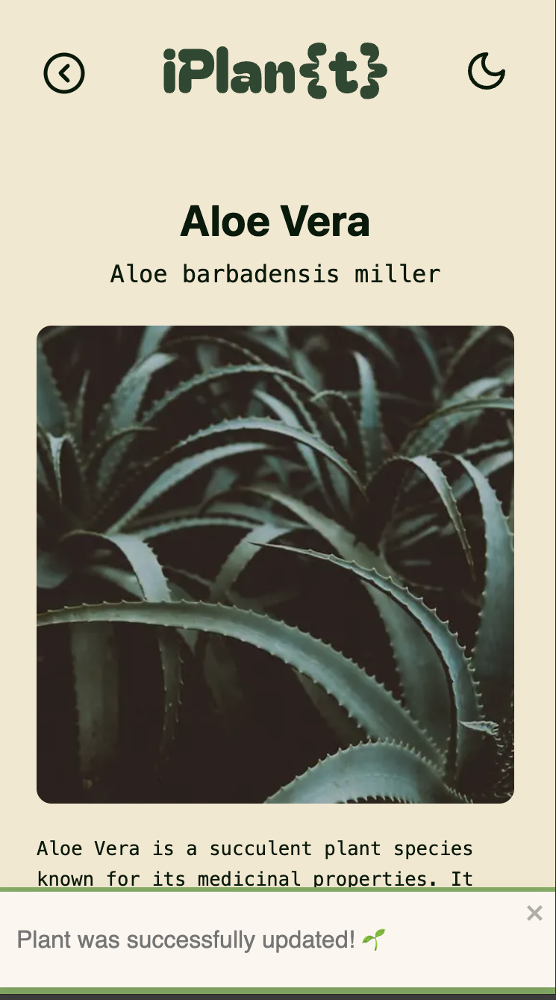

Projects
Plant AppStatic Websites
Your digital plant care assistant
iPlant is an interactive plant care platform that helps users monitor and manage their plants efficiently. Users can track watering schedules, light requirements, and fertilising needs through a clean and responsive interface.
Tech Stack
Core
UI & UX
Data & APIs
Tooling
Project Goal
iPlant helps plant owners organise and monitor plant care routines such as watering, light exposure, and fertilising schedules through a clean and responsive interface.
I built the project to strengthen my full-stack development skills and create a practical application with real-world functionality.
Future versions may include AI-powered plant identification through uploaded images.
Feature Walkthrough

.png)
Responsive Design
The interface adapts smoothly between mobile and desktop layouts for an optimal user experience.

.png)
Home Page
Initial landing page displaying an overview of the user’s plant collection with quick access to key actions.

.png)
Favourite Toggle
Users can mark plants as favourites by clicking the flower icon.

.png)
Search Plants
A fuzzy search system that allows users to find plants even with typos or partial input.

.png)
Filter System
Plants can be filtered based on watering frequency and light requirements for easier browsing.
.png)
Plant Details
Each plant has a detailed view showing watering, light, fertilising needs, and additional care information.

.png)
Add Plants
Users can add custom plants, upload images, and assign care instructions. A default image is used if none is provided.

.png)
Edit Plants
Existing plants can be updated by clicking on the image to modify details or replace the uploaded photo.

.png)
Feedback System
Users receive toast notifications after successful actions such as editing or updating plant information.
Colour Palette
Architecture Overview
Feature-based React architecture with reusable UI components, API routes, database models, and external service integrations.
iPlant
│
├── pages
│ ├── index.js
│ ├── create.js
│ ├── my-plants.js
│ ├── plants
│ │ └── [id]
│ │ ├── index.js
│ │ └── edit.js
│ │
│ └── api
│ ├── plants
│ │ ├── index.js
│ │ └── [id].js
│ │
│ └── upload
│ └── index.js
│
├── components
│ ├── Header
│ ├── Navigation
│ ├── ThemeSwitcher
│ │
│ ├── PlantCard
│ │ └── BookmarkButton
│ │
│ ├── PlantSearch
│ │ └── Fuse.js Search Logic
│ │
│ ├── PlantFilter
│ │ ├── PlantFilter
│ │ ├── WaterNeedFilter
│ │ └── LightNeedFilter
│ │
│ ├── PlantForm
│ │ ├── PlantForm
│ │ ├── ImageUpload
│ │ ├── WaterNeedFieldset
│ │ ├── LightNeedFieldset
│ │ ├── FertiliserSeasonFieldset
│ │ └── Toast
│ │
│ └── ConfirmationModal
│
├── db
│ ├── connect.js
│ └── models
│ └── PlantsSchema.js
│
├── public
├── assets
│
└── external services
├── MongoDB
├── Cloudinary
└── VercelTechnical Decisions
Dynamic Rendering
Plant cards and detail pages were rendered dynamically instead of being hardcoded. This allowed plant information to be fetched directly from the database and made the application scalable, flexible, and easier to extend with new content and features.
Component-Based Styling
Styled Components were used to keep styling closely connected to individual React components. This improved maintainability, encouraged reusable UI patterns, and helped organise the growing codebase more efficiently.
Mobile-First Development
The interface was designed using a mobile-first approach to prioritise usability on smaller screens from the beginning. Layouts and features could then be progressively enhanced for tablet and desktop devices.
React Ecosystem
React was chosen for its reusable component architecture and strong ecosystem of libraries. Tools such as Fuse.js enabled advanced functionality like fuzzy searching while maintaining a responsive and interactive user experience.
Accessibility
Accessibility was considered throughout the development process by using semantic HTML, sufficient color contrast, descriptive alt text, accessible form labels. Lighthouse accessibility guidelines were followed to ensure a more inclusive and responsive user experience across different devices and assistive technologies.
Challenges & Solutions
Dynamic Dark Mode Styling
Implementing dark mode became challenging because many UI elements, including plant detail icons and care indicators, were rendered dynamically from database values rather than static components.
next-themes was used to manage application themes, while icons and UI elements were conditionally styled based on both the active theme and the plant data received from the database. This ensured consistent visuals across dynamically rendered content in both light and dark mode.
Project Workflow, Wireframes & User Flows
The development process combined user-centered planning, wireframing, and agile task management to guide each feature from concept to final implementation.
Initial wireframes were created to map user flows, structure layouts, and validate feature ideas before development began.

Agile Project Board
Tasks were managed through an agile workflow, moving from the product backlog through development, testing, and final deployment.
- Product Backlog
- →
- Approved User Stories
- →
- Sprint Backlog
- →
- In Progress
- →
- Code Review
- →
- Quality Assurance
- →
- Done ✨

Image Upload & Plant Recognition
One planned feature was intelligent plant image recognition during the upload process. The goal was to simplify image uploads, improve moderation and create a safer, more user-friendly experience.
Goals
- Take photos directly with the device camera
- Upload plant images more easily
- Detect and warn about non-plant uploads
- Keep the application child-friendly
Planned Features
- Next Cloudinary Upload Widget integration
- Object detection with Cloudinary AI add-ons
- Plant-related object validation
- Fallback placeholder image handling
Technical Approach
- Cloudinary Upload Presets
- Unsigned uploads
- Object detection and categorization
- React state management for validation
If uploaded images did not contain plant-related objects, users would receive a warning asking them to upload a plant image instead.
Limitations
A more advanced plant-recognition API capable of identifying specific plant species was also considered.
Due to API costs and budget limitations, the functionality could not be implemented within the project scope.
Cloudinary’s built-in AI could only distinguish general categories such as pots or vases, making accurate plant recognition impossible.
With additional funding, this feature could significantly improve the application's usability and overall experience.
Static Websites & Redesigns
Alongside full-stack web applications, I also design and develop responsive static websites using HTML, CSS, JavaScript, PHP, and WordPress. My work includes modern UI design, legacy website redesigns, debugging, performance improvements, and responsive layouts.
Tech Stack